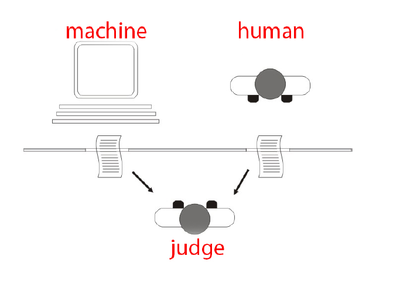
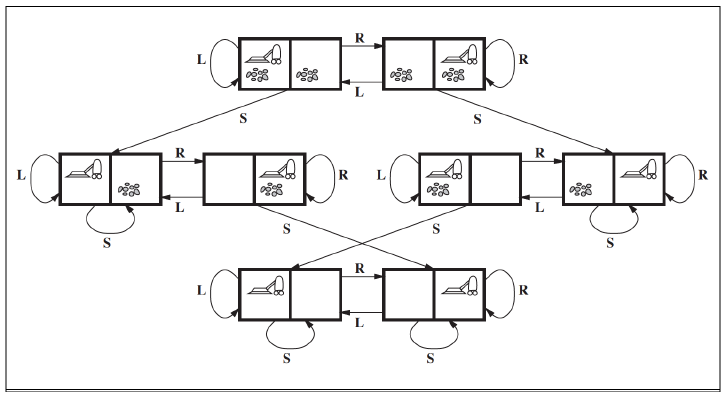
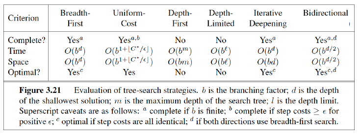
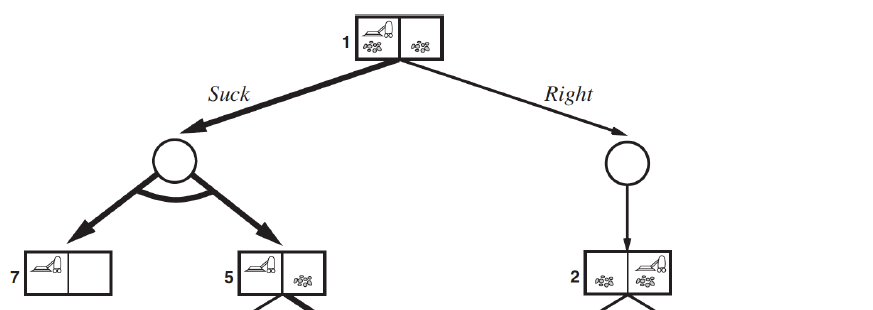
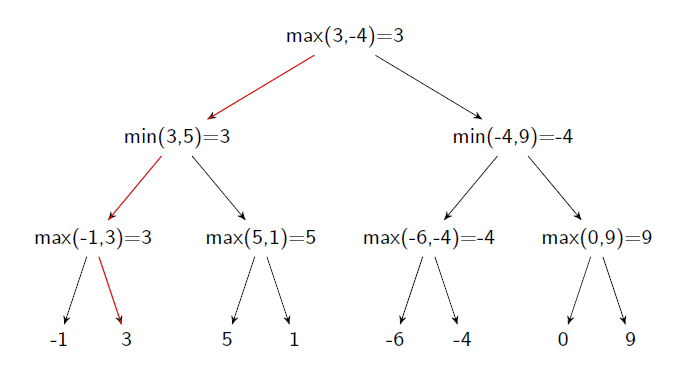
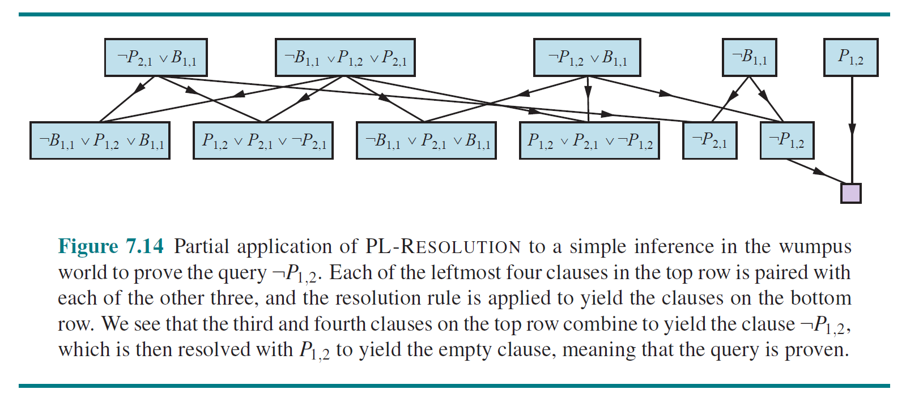

02180 Introduction to Artificial Intelligence
Topics Covered
| Week |
Title |
Topics |
| Week 1 |
Introduction |
Turing test
Symbolic
Sub-symbolic |
| Week 2 |
Uninformed Search |
Search problem
Tree search
Graph search
BFS DFS |
| Week 3 |
Informed Search |
Uniform-cost search
Best-first search
Greedy BFS
A*star |
| Week 4 |
Non-determinism
Partial Observability |
And-Or trees
Conditional plans
Belief states
Percept, update, results |
| Week 5 |
Adversarial Search |
MiniMax
Alpha-beta pruning
Evaluation function |
| Week 6 |
Monte Carlo Tree Search |
|
| Week 8 |
Logical Agents |
Entailment
Model checking
Propositional logic |
| Week 9 |
Belief Revision I |
AGM belief revision model
Revision, contraction, expansion
Plausibility orders |
| Week 10 |
Logical Inference |
Propositional theorem proving
Inference rules
Resolution
Conjunctive normal form
Definite & Horn clauses |
| Week 11 |
Belief Revision II |
AGM Postulates
Remainders A⊥φ
Partial meet contraction
Belief bases & sets
Entrenchment |
Miscellaneous
| p |
q |
p∨q |
p∧q |
p→q |
p←q |
p↔q |
| 0 |
0 |
0 |
0 |
1 |
1 |
1 |
| 0 |
1 |
1 |
0 |
1 |
0 |
0 |
| 1 |
0 |
1 |
0 |
0 |
1 |
0 |
| 1 |
1 |
1 |
1 |
1 |
1 |
1 |
Standard logical equivalences
A→B≡¬A∨B

Week 1 Introduction
Back to top
Turing test
- behavioural intelligence test
- the machine passes if the judge cannot tell the machine's and human's performance apart
- match/outperform/mimic/complement

- John McCarthy: Artificial intelligence is the science and engineering of making intelligent machines, especially intelligent computer programs.
Symbolic VS Sub-symbolic
- symbolic: simulates human symolic, conscious reasoning.
- e.g. search, planning, logical reasoning
- e.g. A*star, natural language processing
- sub-symbolic: simulates fundamental physical/neural processes
- neural networks, kNN, machine learning, deep learning
Environment Types
- observability: full/partial
- single/multi-agent
- competive/cooperative
- deterministic/stochastic
- static/dynamic
Back to top
No sense of closeness to the goal.
Informed: heuristics used to give sense of closeness to the goal
Search problem
- initial state
- goal state
- goal-test(s): returns true if s is goal state
- actions(s): set of actions applicable in state s
- results(s,a): state s′ reached from s by action a
- stepcost(s,a) cost of executing a in s
Other terms
- solution: sequence of actions (path) from s0 to goal state. optimal if has the minimum sum of step costs.
- state space: total number of possible states, consists of each possible configuration
Vacuum World

- State space: 2⋅22 possible states
- s0: Initial state
- Actions(s): for each state three possible actions: L, R, S.
- Results(s; a): actions have their expected results.
- Goal-Test(s): are all squares clean?
- Step-Cost(s; a): each step costs 1.
Tree Search
- does not keep track of repeated states
- expanded: all children nodes have been generated
- frontier: generated nodes but not expanded

Graph Search
- keeps track of already generated states, unlike tree search

Breadth-first search (BFS)
- frontier is a queue, FIFO
- slower, explores more nodes, but guarantees optimal solution
Depth-first search (DFS)
- frontier is stack, LIFO
- typically faster than BFS
Measure performance using completeness, optimality, time complexity, space complexity

Back to top
Heuristics: provides extra information about actions/transitions
e.g. straight line distance from node to goal
- all steps are equal, BFS is optimal
- node selection for expansion is based on path-cost g(n)
- frontier: priority queue ordered by g
- goal-test applied when the node is selected for expansion
Best-first Search
- node selection for expansion is based on evaluation function f(n)
- frontier: priority queue ordered by f
- include a heuristic function in f
- f(n)=g(n)+h(n)
Heuristics, h(n)
- estimated cost of the cheapest path from node n to a goal state
- if n is a goal node, then h(n)=0
Greedy Best-first Search
- f(n)=h(n)
- greedy, incomplete, complexity of tree version is as DFS
A*star
- f(n)=g(n)+h(n)
- g(n): cost to reach node
- h(n): estimated cost to get from node to goal
- is optimal when heuristic h is admissable
Heuristics
- optimal cost of node n, h∗(n): minimal cost to achieve goal from n
- Admissable: cost of reaching the goal is never overestimated
- always optimistic
- h(n)≤h∗(n) for all nodes n
- e.g. straight line euclidean distance as h(n) is admissable
- Consistency: h(n)≤c(n,a,m)+h(m)
- consistent h implies admissability

- Dominating: h2 is dominating h1 if h2(s)≥h1(s) for all s
- Tip: generate heuristics via relaxed problems
Week 4 Non-determinism, Partial Observability
Back to top
Non-determinism
Erractic
- when applied the action suck, it cleans the square, and sometimes cleans up dirt in adjacent square
- when applied the action suck, it cleans the square, and sometimes deposits dirt in adjacent square
Search problem
- s0: Initial state
- Actions(s): for each state three possible actions: L, R, S.
- Results(s; a): applying a in s leads to a set of states S′.
- Results(1,suck) - {5,7}
- Results((d,d,1), suck) = {(c,d,1),(c,c,1)}
- Goal-Test(s): are all squares clean?
- Step-Cost(s; a): each step costs 1.
And-Or Trees
- Deterministic actions
- represented using OR nodes
- solution is a path in state space
- turned into a sequence of actions (sequential plan)

- Non-determinisitic actions
- represented using AND nodes
- solution is a subtree of state space
- turned into a conditional plan (contingency plan)

Conditional plans
- π::=ϵ∣a∣ if s then π1 else π2∣π1;π2
- ϵ: empty plan (usually upon reaching goal state)
- a: action
- s: state
- π1;π2: first execute π1 then π2 (sequential composition)
- π= Suck; if s5 then (Right; Suck)
Policy
- a mapping from states to Actions
- ⊓:⊓(s1)= Suck, ⊓(s5) = Right, ⊓(s6) = Suck
And-Or Graph Search
- Or-Search: when all actions are deterministic
- there is some pseudocode in the slides
Cyclic solutions
- subtrees where every leaf is either a goal or loop node
- guarantees reaching goal when assuming fairness (every possible outcome will eventually happen)
- requires conditional plans with loops
- e.g. while cond do π1
- e.g. Suck; Right; while not in 6 do Right; Suck
Partial Observability
Full state observability
Partial observability
Null observability (conformant problems)
Belief states, b
- a set of physical states, s
- contains the states considered possible by an agent in a given state
- n states →2n belief states
Percept(s)
- codes the observation made by the agent in state s
- e.g. Percepts(s) = dirty
- Full observability: Percepts(s) = {s}
- Null observability: Percepts(s) = {0}
Possible-Percepts
- takes belief state b
- returns all possible observations
Update
- takes belief state b and observation o
- filters away states that not consistent with observation
- returns a set of possible states that are consistent with observation
Results
- takes observations into account
- returns a set of belief states (a set of sets of states)
Week 5 Adversarial Search
Back to top
Zero-sum games
- payoffs in each cell (game outcome)sums up to 0
- games with pure conflict
Games
- s0: initial state
- Player(s): who has the move in s
- Actions(s): Legal moves in s
- Result(s, a): transition model
- Terminal-Test(s): terminal test, is the game over?
- Utility(s; p): utility/payoff function
- Numerical value for player p in terminal state s.
- e.g. +1 for win and -1 for loose (zero-sum)
MiniMax
- 2 players: max, min
- max: chooses the move the maximises the minimax value
- min: chooses the move the minimises the minimax value
- zero-sum game
- nodes assigned values representing expected utility for max
- form of DFS search

Example

Alpha-beta Pruning
- makes the game tree smaller, computationally efficient
- α: lower bound on what MAX can achieve playing up till the current node
- β: upper bound on what MIN can achieve playing up till the current node
- root node: α=−∞,β=∞
Max node
- passes α-value down
- passes β-value up
- β cut: v≥β
- min has better previous choice
- max has too good of a current choice
Min node
- passes β-value down
- passes α-value up
- α cut: v≤α
- max has a better previous choice
- min has too good of a current choice

Evaluation function
- expected utility when searching to the end is not possible
- estimate of how "good" the state is
ExpectiMax
- play against Chance, probabilistic decisions
Week 6 Monte Carlo Tree Search
Back to top
- Reinforcement learning and MiniMax
- Non-uniform tree expansion with most promising states first
- Evaluation based on monte-carlo sampling/random play-outs
- Converges to Minimax
Evaluation of state s: play n random full games from state s, take average utililty of resulting games
Upper confidence bound for node t, UCB(t)=ntrt+nt2lnns
Workflow
- Selection
- node on the frontier is selected for expansion
- start at the root, find a path to a frontier node by selecting the best child
- use UCB to find best child
- Expansion
- expand selected node
- add it to frontier
- Simulation
- play a random game from generated child node
- Backup
- update evalation of all nodes on path from the root to the generated child node based on the playout
Week 8 Logical Agents
Back to top
Validity
- if there is transmission of truth
- if all premises are true, the conclusion is also true
- if the conclusion is false, at least one premise is false
Knowledge base
- set of sentences
- sentence: assertions about the world in a knowledge representation language
- axioms: sentences that must be true
- Add (TELL), query (ASK), inference rule (TELLed): return what it has been told before
Entailment, ψ⊨φ
- φ follows from ψ
- logical inference
Model checking
- enumerate all models of KB, check if the conclusion holds
- KB⊢φ: sentence φ derived from KB
Language of Propositional Logic
| Symbol |
Meaning |
| ∧ |
Conjunction, AND |
| ∨ |
Disjunction, OR |
| ¬ |
Negation, NOT |
| → |
Implication, IMPLES |
| ↔ |
Bi-implication, IF AND ONLY IF |
| ⊤ |
True |
| ⊥ |
False |
- p,q,r,...: every proposition letter is a formula
- If φ is a forumla, ¬φ is a formula
- (ϕ1∧ϕ2),(ϕ1∨ϕ2),(ϕ1→ϕ2),(ϕ1↔ϕ2) are formulas too
Syntatic derivation
- used to argue if an expression is a formula of propositional logic
Truth tables

- generate all possibile combinations of propositions and check for conclusion
Tautology: statement that is always true under any valuation
Satisfiable: there exists a valuation which makes the formula true
Valid: the premises are true in every situation
Proof system: set of formulas/rules of inference
Hilbery-style System (modus ponens)

| A |
B |
A→B |
| 0 |
0 |
1 |
| 0 |
1 |
1 |
| 1 |
0 |
0 |
| 1 |
1 |
1 |
A→B≡¬A∨B
Week 9 Belief Revision I
Back to top
Updating a knowledge base in light of new information, especially when there is conflict with pre-existing knowledge
AGM Belief Revision Model
- beliefs are changeable, can be false
- expressed using propositional logic
- belief set: set of formulas that are deductively closed
- important to keep the belief set consistent (e.g. no complementary literals)
Logical consequence
- Cn(B) is the set of logical consequences of B
- φ∈Cn(B): φ can be derived from B
e.g. B={p,q,p→¬q}
- B⊂Cn(B)
- p∧q∈Cn(B)
- ¬q∈Cn(B)
Belief revision on belief sets
-
Revision, B∗φ
- remove beliefs inconsistent with φ
- add φ
- ensure new belief set B′ stays consistent
- Levi Identity B∗φ:=(B÷¬φ)+φ
-
Contraction, B÷φ
- remove φ from B
-
Expansion, B+φ
Belief revision on plausibility orders

The lower the state, the more plausible it is.
- After revising with ¬q, look for prior minimal states that do not satisfy q.
Result of left table: state y
Result of right table: state w
- After contracting with q, the new beliefs are specified by the union of
- prior most plausible world
- prior most plausible world not-entailing q
Result of left table: state x and y
Result of right table: state x and w
Plausibility order: total preoder ≤ possible truth asssignments W on P
Week 10 Logical Inference
Back to top
Propositional Theorem Proving
- check validity using brute-force truth tables
- Semantic model checking: enumerate models, show it holds in all models
- Syntatic theorem proving: apply ruples of inference to sentences in KB, construct a proof without consulting models
Key terms
- Logical equivalence, ⊤: true in the same set of models, or each of them entails the other, φ≡ψ
- Valid, validity, tautology: true in all models, φ≡⊤
- Satisfiable, satisfiability: true in ≥ 1 models
- Unsatisfiable: false in all models
- φ is valid iff ¬φ is unsatisfiable
- φ is satisfiable iff ¬φ is not valid
- φ⊨ψ implies the following
- φ→ψ is valid
- (φ∧¬ψ) is False (proof by contradition)
Inference rules
- Modus Ponens: ψφ→ψ,φ
- i.e. if the 1st term is known, then 2nd term can be inferred.
- And-Elimination: φφ∧ψ
Monotonicity: set of entailed sentences can only increase as information is added to the KB
- If KB⊨φ, then KB∪ψ⊨φ (previous knowledge is still entailed)
Resolution

e.g.
Unit:P∨RP∨¬Q∨R,Q
Full:R∨S∨TP∨¬Q∨R∨S,¬P∨Q∨T
- conjunction ∧ of disjunction ∨ clauses
- clause1∧clause2∧clause3, where clause1 is (¬r∨p∨s)
Resolution Algorithm
- to show KB⊨φ, show KB∧¬φ is unsatisfiable
- always terminates
- is complete by ground resolution theorem
- Convert KB∧¬φ to CNF
- Apply resolution rule (full/unit) to the resulting clauses
- A new clauses is produced when a pair that contains complementary literals is resolved. Add the new clause to the set if it does not exist.
- Repeat the process until
- There are no new clauses that can be added: KB does not entail φ
- 2 clauses resolve to yield an empty clause: KB entails φ

Definite clauses
- clauses of literas with exactly one positive
e.g. (¬p∨¬s∨r)
(¬p∨¬s∨r)≡(p∧s)→r
Horn clauses
- disjunction of clauses of which at most one is positive
- all definite clauses are horn clauses
- closed under resolution: resolving 2 horn clauses returns a horn clause
- inference can be done using forward and backward chaining
Week 11 Belief Revision II
Back to top
AGM Rationality Postulates
Contraction
- Closure: the outcome is logically closed
- B÷φ=Cn(B÷φ)
- Success: the outcome does not contain φ
- If φ∈Cn(∅), then φ∈Cn(B÷φ)
- Inclusion: the outcome is a subset of the original set
- B÷φ⊆B
- Vacuity: no effect if the incoming sentence is not in the original set
- If φ∈Cn(B), then B÷φ=B
- Extensionality: contracting with equivalent sentences have the same effect
- If φ↔ψ∈Cn(∅), then B÷φ=B÷ψ
- and more
Similar postulates for revision
Remainders A⊥φ
- goal: limit removals from the original set
- inclusion maximal sets of A that do not imply φ
- let set C be an element of A⊥φ
- C is a subset of A
- C is the maximal subset
- C does not imply φ
- there is no set C′ s.t. C′ does not imply φ and C⊂C′⊆A
e.g. A={p,qp→q,¬p→q}
There are 2 elements in A⊥q. Each element is a maximal subset that does not imply q.
- {p,¬p→q}
- {p→q}
Partial Meet Contraction
- intersection of the selected elements of A⊥φ
- selection function γ
- γ(B⊥φ) is a non-empty subet of B⊥φ
- applicable to belief bases
Belief base
- set of sentences that is not necessarily deductively closed
- beliefs that are held independently
- Belief base A, belief set Cn(A) that are beliefs according to A
- a belief set can be represented by different belief bases
- belief bases have more expressive power than belief sets
Statically equivalent: belief sets are the same upon inspection only
Dynamically equivalent: belief sets are different after operations of change
Entrenchment
- assigning beliefs with epistemic value
- such that beliefs with little explanatory power and informational value are given up first